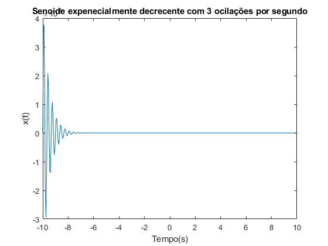
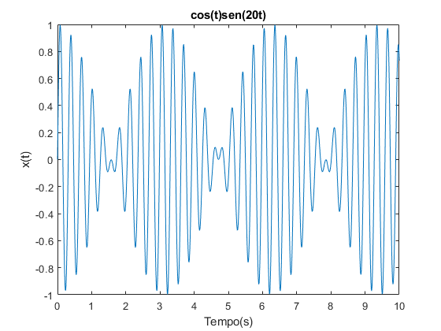
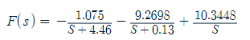
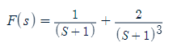

Laboratório de Sistemas Dinâicos
Prática 01 11/03/2024 Autores: Victor Hugo Daia Lorenzato e Whilker Henrique Santos Silva
Contents
Limpar workspcade
clear;
close all;
clc;
Ex01 A
fprintf('------------------ EX 01-A ---------------\n'); A = [1 1 6; 5 -2 1; 8 2 -3]; B = [2 9; -5 -1; 9 2]; tamA = size(A); tamB = size(B); linhasA = tamA(1,1); colunasA = tamA(1,2); linhasB = tamB(1,1); colunasB = tamB(1,2); if linhasA == colunasA disp('matriz A é quadrada'); else disp('matriz A não é quadrada'); end if linhasB == colunasB disp('matriz B é quadrada'); else disp('matriz B não é quadrada'); end fprintf('\n');
------------------ EX 01-A --------------- matriz A é quadrada matriz B não é quadrada
Ex01 B
fprintf('------------------ EX 01-B ---------------\n'); for i = 1:linhasA for j = 1:colunasA if A(i,j) == 2 fprintf('matriz A contém valor 2 na posição %d,%d\n', i,j); end end end for i = 1:linhasB for j = 1:colunasB if B(i,j) == 2 fprintf('matriz B contém valor 2 na posição %d,%d\n', i,j); end end end fprintf('\n');
------------------ EX 01-B --------------- matriz A contém valor 2 na posição 3,2 matriz B contém valor 2 na posição 1,1 matriz B contém valor 2 na posição 3,2
Ex01 C
fprintf('------------------ EX 01-C ---------------\n'); for i = 1:linhasA for j = 1:colunasA if A(i,j) < 0 fprintf('matriz A contem valor negativo na posição %d,%d\n', i,j); end end end for i = 1:linhasB for j = 1:colunasB if B(i,j) < 0 fprintf('matriz B contém valor negativo na posição %d,%d\n', i,j); end end end fprintf('\n');
------------------ EX 01-C --------------- matriz A contem valor negativo na posição 2,2 matriz A contem valor negativo na posição 3,3 matriz B contém valor negativo na posição 2,1 matriz B contém valor negativo na posição 2,2
Ex02
t = -10:0.05:10; x_t = exp(-2*t) .* sin(6*pi*t); plot(t,x_t); xlabel('Tempo(s)'); ylabel('x(t)'); title('Senoide expenecialmente decrecente com 3 ocilações por segundo');
Ex 03
t = 0:0.01:10; x_t = cos(t) .* sin(20*t); plot(t,x_t); xlabel('Tempo(s)'); ylabel('x(t)'); title('cos(t)sen(20t)');
Ex04 A
[R,P] = residue([6 6], [1 4.59 0.58 0]); disp('R: '); disp(R); disp('P: '); disp(P);
R:
-1.0750
-9.2698
10.3448
P:
-4.4600
-0.1300
0

Ex04 B
[R, P] = residue([1 2 3],[1 3 3 1]); disp('R: '); disp(R); disp('P: '); disp(P);
R:
1.0000
0.0000
2.0000
P:
-1.0000
-1.0000
-1.0000
